Toward Real-time Generation with MiniMax H3

Present online · Slides and downloads
16 main slides, including the cover and closing slide. Suggested speaking time: 13 minutes 55 seconds, including 50 seconds for the recorded demo. The original material remains available as hidden detail. The talk now ends with ComfyUI, the planned developer video tool, and the new community invitation.
| Order | Topic | Suggested time |
|---|---|---|
| 1 | Toward Real-time Generation with MiniMax H3 | 20 s |
| 2 | MiniMax H3 in Context | 40 s |
| 3 | SM120 Cards | 40 s |
| 4 | Baseline: Latency Breakdown | 60 s |
| 5 | Optimization - Distillation | 60 s |
| 6 | Optimization - Video Sparse Attention + NVFP4 | 70 s |
| 7 | Optimization - Comms | 75 s |
| 8 | Optimization - Comms | 75 s |
| 9 | From Minutes to Real Time | 90 s |
| 10 | From a Question to a Reply | 40 s |
| 11 | Continuation: From One Clip to the Next | 45 s |
| 12 | Live Demo | 50 s |
| 13 | Takeaways | 55 s |
| 14 | vLLM-Omni for Creators — ComfyUI | 45 s |
| 15 | vLLM-Omni for Creators — Video Studio | 45 s |
| 16 | Build with vLLM-Omni | 25 s |
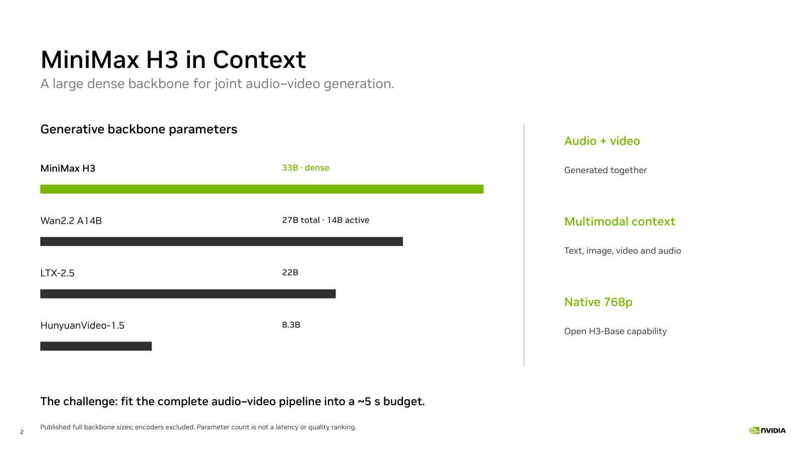
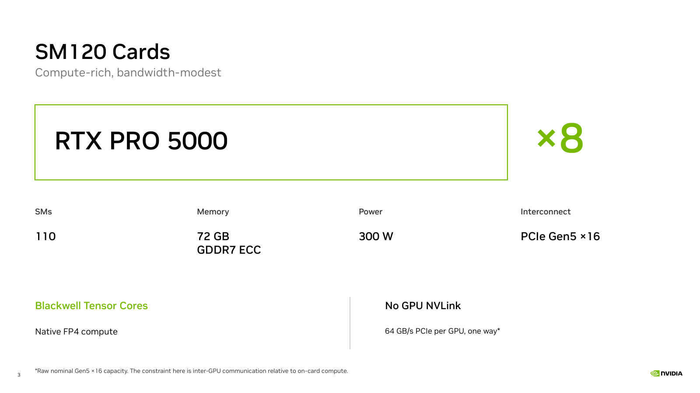
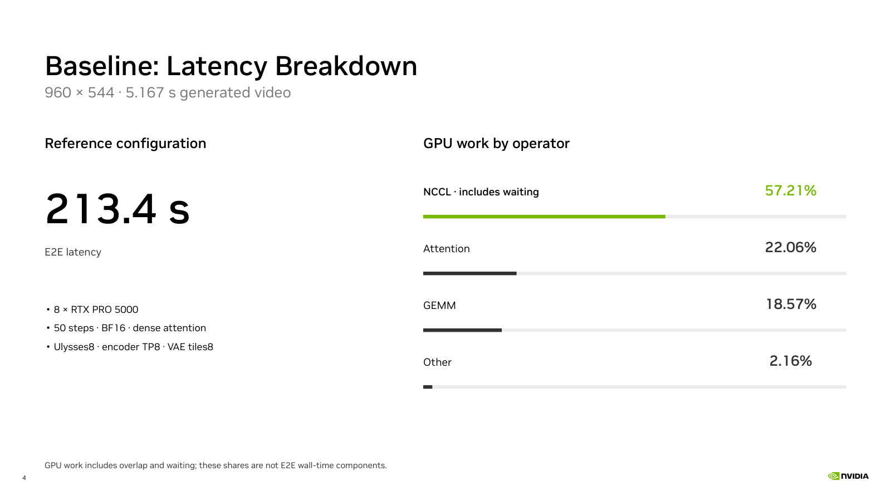
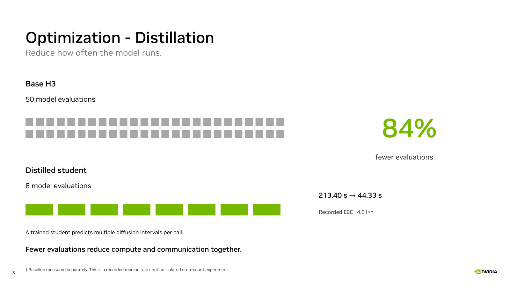
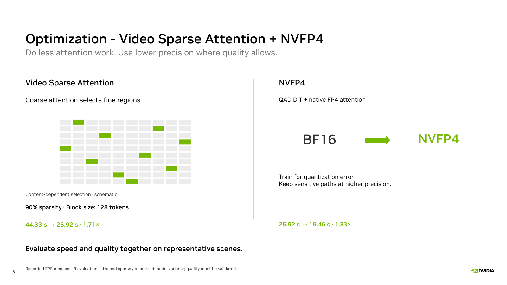
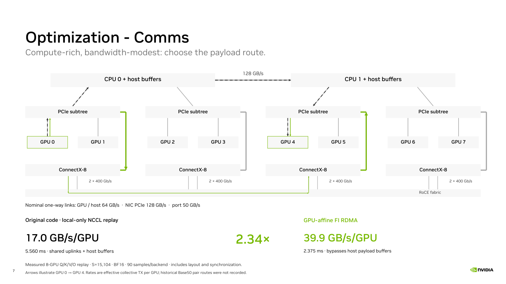
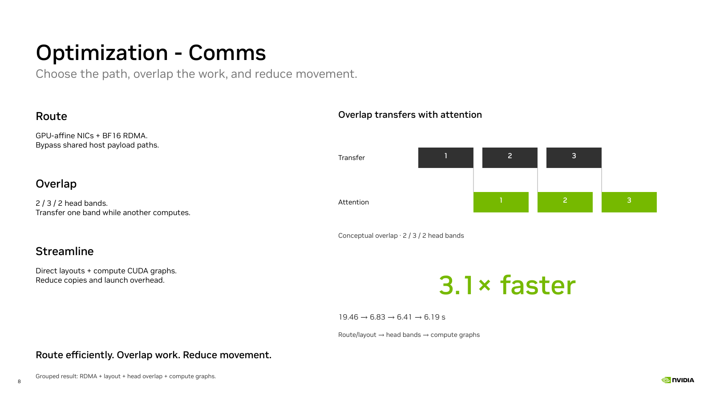
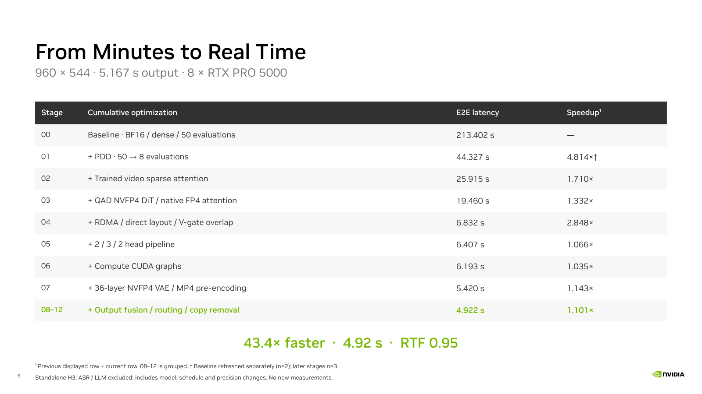
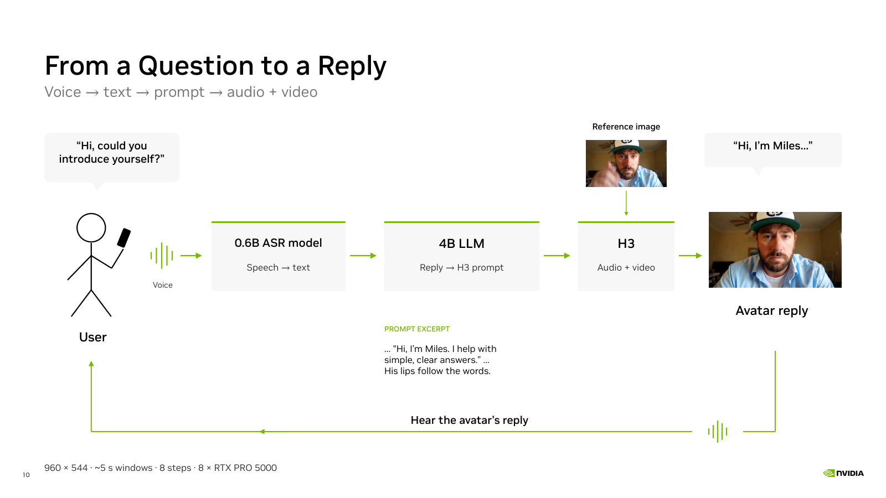
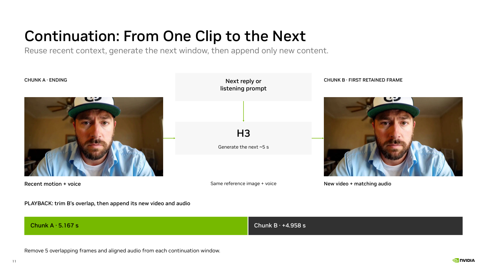
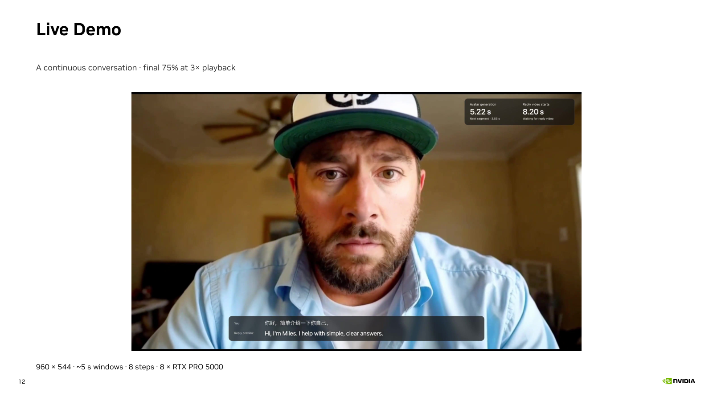
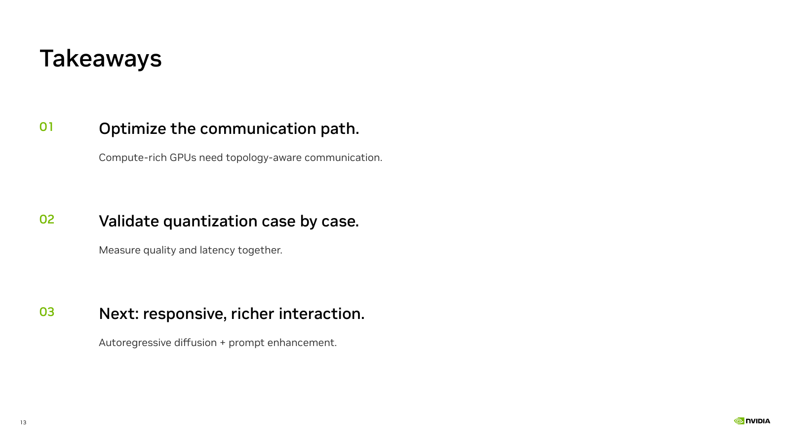


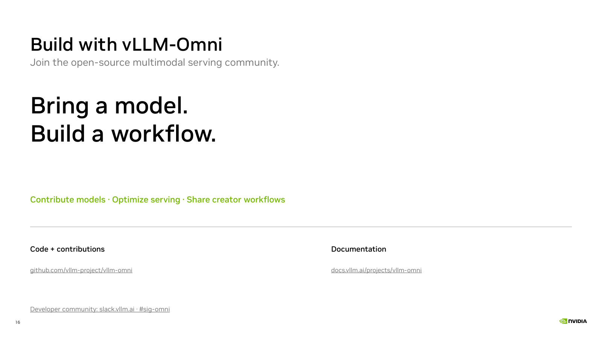
Timing is a suggested presentation plan. The 43.4× overall result compares separately recorded baseline and final medians and includes model, schedule and precision changes. The 3.1× communication result groups stages 03–06. Plan and ratio provenance · Measured results